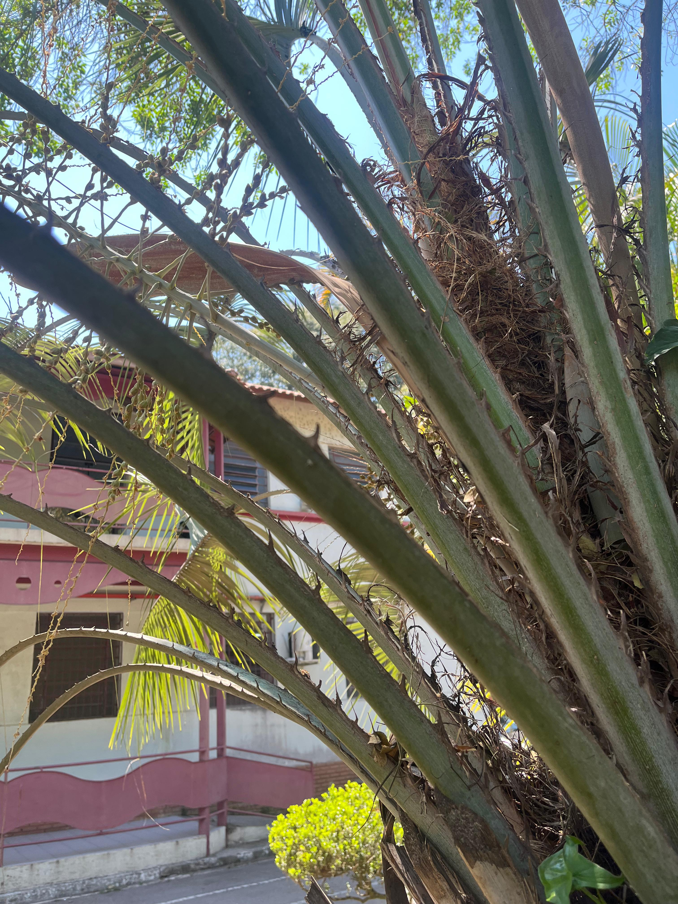

Cica ou Palmeira-samambaia
Cycas circinalis L.

Informações Botânicas
Nome Científico:
Cycas circinalis L.
Família:
Cycadaceae
Descrição:
Arbusto de aparência pré-histórica, com 2 a 3 metros de altura e crescimento muito lento. Possui um tronco grosso, que pode se ramificar com a idade, e uma coroa de folhas longas e rígidas que lembram as de uma samambaia. É uma planta dióica, ou seja, existem indivíduos "macho", que produzem uma grande estrutura marrom em formato de cone, e indivíduos "fêmea", que produzem sementes esféricas e vistosas.
Localização no Jardim:
Muito versátil no paisagismo, pode ser usada em vasos quando jovem, ou plantada em jardins e parques, de forma isolada ou em grupos, tanto a pleno sol como à meia-sombra.
Características Especiais:
- Um Fóssil Vivo: Pertence a um grupo de plantas muito antigo, que já existia na época dos dinossauros.
- Planta com Sexo Definido:Existem plantas masculinas, que produzem um grande cone, e plantas femininas, que geram sementes avermelhadas.
- Todas as Partes são Tóxicas: É importante saber que suas folhas e sementes são venenosas se ingeridas por humanos ou animais de estimação.
- Crescimento Lentíssimo:Leva décadas para atingir seu tamanho máximo, sendo uma planta para muitas gerações.